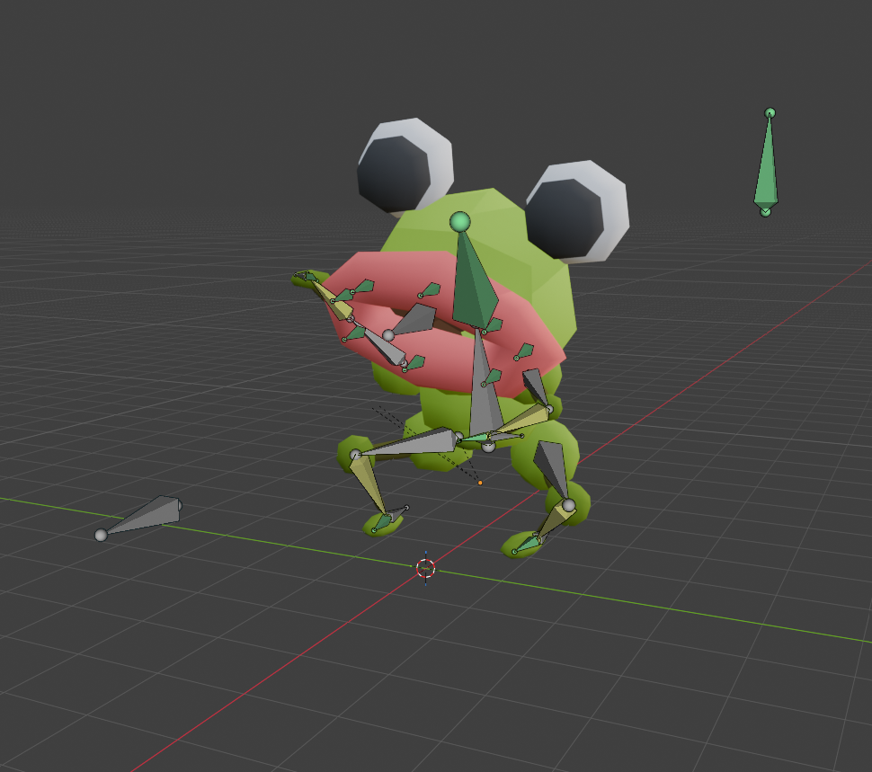

RIBBIT RIGGING
Project Description
Ribbit Rigging is my first complete rigged model coming with 3 keyframe animations.
My goal was to make an asset that I could use as video game character. Making this project taught me the basics of 3D rigging, and keyframe animation. I purposefully made the mesh of the frog as simple as possible so that I could focus on the rigging, and keyframe animation. That's why I embraced a low-poly, cartoonish style.
The 3D model is downloadable from its Github repository.
Demonstration
The video below showcases the 3 different animations I made myself. The first animation is simply an idle animation, the second one is a jump cycle, and the last could be used to make the frog shoot a laser out of its mouth. This playlist provides more insights on how I implemented different parts of this project.
Process
Rigging and animating a 3D model without any tutorial was a great experience. I have experimented with a lot of features which made me more familiar with blender. I explain below how I implemented the most important features and the difficulties I encountered doing so.
The 3D model
The original motivation for this project was to make a character for a game I am working on using Unity. I am remaking my other project "Froppy", using 3D assets to learn the pipeline to import 3D models from blender to Unity.
I wanted to keep it as simple as possible which is why I directly made this frog by "doodling" on Blender. I used different shapes and combined them in various ways until I found a combination that was interesting enough. Using separate pieces made it very easy to assign weight to the bones later, which is a technique I will definitely reuse when prototyping or making low-poy assets in the future. The colors were chosen using the same technique as in my other project "Chisa-Shisa"
The hardest part was probably making the mouth and connecting it to the rest of the head somehow. I first used a curve with a skin modifier, but the result gave me too many faces and made it impossible to connect it to the head. By using a torus and manually selecting the number of faces when instancing it, I managed to make this funny mouth that fits the low-poly cartoonish style well enough.
The rig
Each separate piece of the model basically has 1 deformation bone corresponding to it. Each bone controls its piece with a 100% influence. The only exception is the mouth which needed 8 deformation bones to allow precise control. Using 8 bones for 1 mesh forced me to use the weight paint mode of blender. It was a struggle at first, but after trial and error I reached a result that was pretty satisfying.
To make it easier to animate, I used "control bones". These bones do not directly deform the mesh, but they can transform other deformation bones that transform the mesh. The first example of such bones are the inverse kinematic bones (IK bones). When moving the control bone for one of the leg, the rest of the arm follows in a way that makes sense. It also makes it possible to move the torso while the legs stay still. Another example is the control bone of the mouth. That control bone make it easy to open and close the mouth without losing the flexibility to move each deformation bone individually.
The video right here shows how different bones affect the mesh and how they can be use to create animations.
Creating Animations
I used keyframe animation within blender to make 3 different animations. I learned how keyframe animation works, and different tools that blender provides to make the creation process easier.
It was a matter of trial and error to find what was wrong with my poses at first. Even though the poses at each frame looked fine individually, the animation didn't look great at first. It made me realize the importance of exaggerating the poses, and using the right interpolation mode between different frames. Exponential interpolation works great for explosive movements such as extending the legs before jumping. Bézier interpolation is better for softer movements. The biggest challenge was to make the "shooting" animation. I had to make sure the timing was just right to create the recoil effect. I also added some random chaos to the lips' movement to give a powerful feeling to whatever is being shot from the mouth.
At first, I had a lot of trouble when trying to control bones individually without affecting the rest of the armature. For example fmaking the feet point down or point up, or adding movement to a precise part of the mouth. Using the graph editor in blender, I learned to isolate bones I was interested in, and control them with more precision. I also learned about curve modifier that allows for a procedural approach in creating movement.
The video on the left displays how I used blender's graph editor and curve noise modifier to add randomness to the shooting animation.